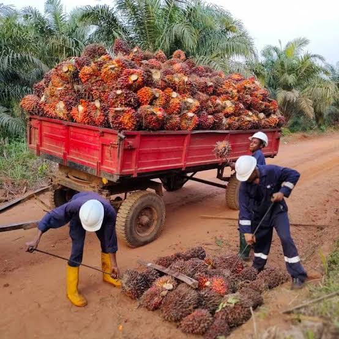
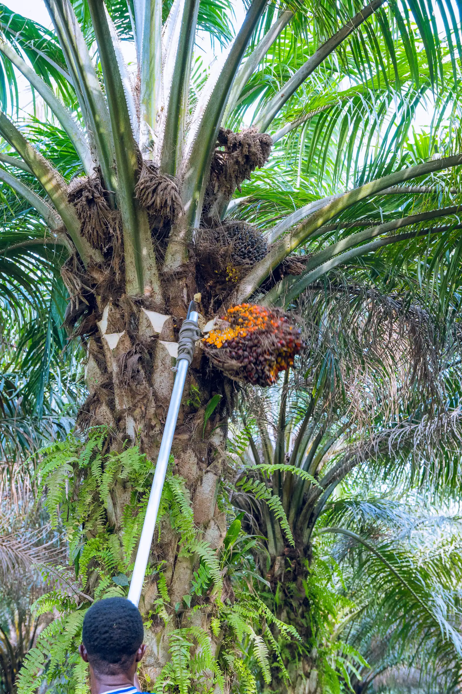
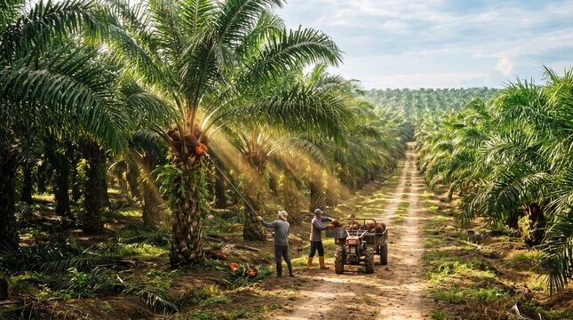
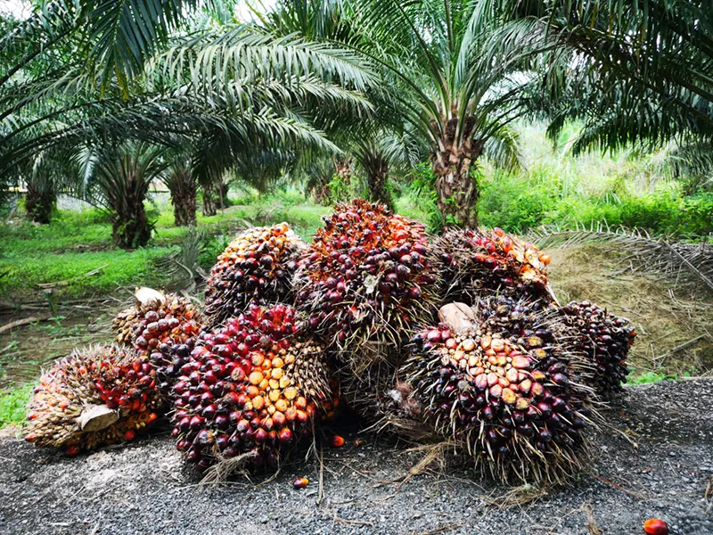
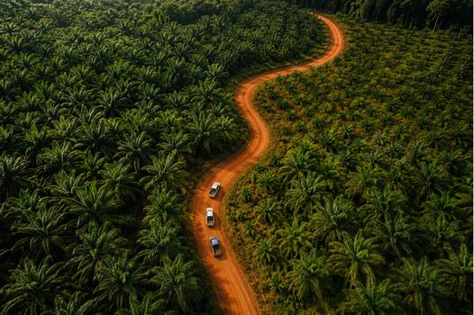

01FRESH HARVEST
Fresh Fruit Bunches
Freshly harvested oil palm fruit bunches are the agricultural starting point for palm oil processing.
BAEDO details: [Add confirmed grade, handling, and supply information]
Ask about this product ↗
From the palm, with care
Explore palm-derived agricultural product categories connected to the work of BAEDO INTEGRATED FARM.
BAEDO INTEGRATED FARM · OUR PRODUCT RANGE
From our agricultural work
Oil palm gives rise to a range of agricultural products, from fresh fruit bunches to oil and kernel-derived goods.
Here you can explore product categories relevant to palm agriculture. Specific BAEDO product formats, specifications, and current offering details are being confirmed. Please contact our team for information before making a sourcing decision.
Product range and details: [Add confirmed BAEDO product information]
A closer look
Explore these palm-related categories and ask us about the details that matter to your needs.

01FRESH HARVEST
Freshly harvested oil palm fruit bunches are the agricultural starting point for palm oil processing.
BAEDO details: [Add confirmed grade, handling, and supply information]
Ask about this product ↗PALM OIL
Oil derived from the fleshy fruit of the oil palm, used in a range of food and non-food applications.
BAEDO details: [Add confirmed format, specification, and packaging]
Ask about this product ↗
03PALM KERNEL
Products derived from the oil palm kernel. Add the specific kernel product types offered by the farm.
BAEDO details: [Add confirmed kernel products and specifications]
Ask about this product ↗These are product categories, not a confirmation of current availability. Contact BAEDO for its confirmed offering.
Care at every step
Product quality information should be specific to the product and supported by confirmed details. BAEDO’s quality practices, specifications, and documentation can be added here when they are available.
Ask about product details ↗[Add confirmed product specifications]
[Add confirmed quality checks and supporting documentation]
[Add confirmed product packaging and handling details]

FROM OUR PLANTATIONThe work behind each product
Our products begin with oil palm agriculture. Product processing, handling, and supply information depend on the confirmed product and should be shared clearly with each inquiry.
Production information
[Add confirmed production steps, handling details, and any relevant supply information.]

Start a conversation
Tell us what you’re looking for. Our team can provide confirmed product information and discuss your inquiry.
Make an inquiry ↗